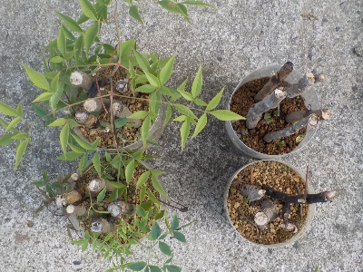
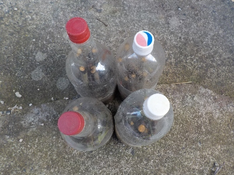
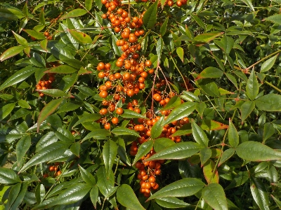
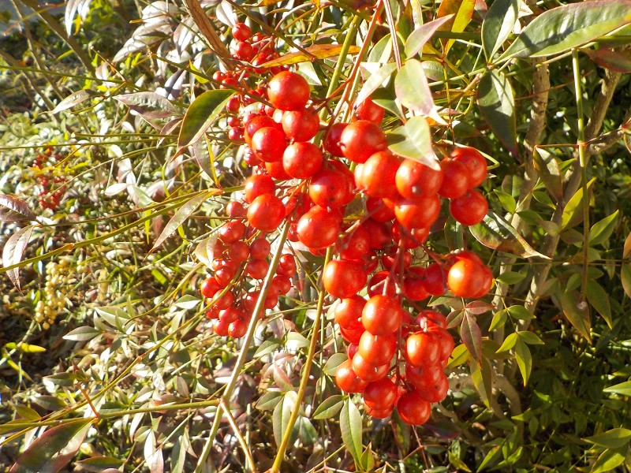
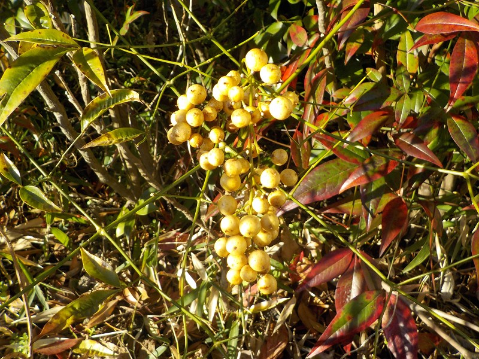
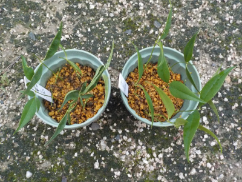
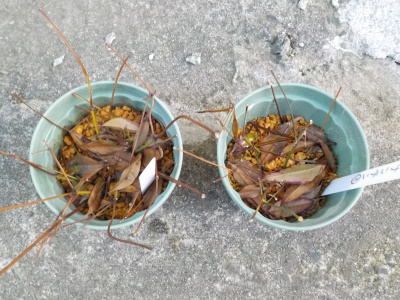
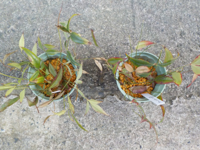

紅白の南天が欲しかったんですが、赤だけ生き残りました。
2025/07/25

紅白の南天を並べて置きたいと思い挿し木したんですけど、白い実の南天は全滅しました。
白は弱いんだ。
とりあえず赤を2本育てて、白は来年また挿し木しようかな。
種蒔きは何色になるかわからないので、やらない方がいいんだろうな。
2025/07/25

紅白の南天を並べて置きたいと思い挿し木したんですけど、白い実の南天は全滅しました。
白は弱いんだ。
とりあえず赤を2本育てて、白は来年また挿し木しようかな。
種蒔きは何色になるかわからないので、やらない方がいいんだろうな。
2025/02/11

南天の実がなくなったので挿し木しました。
まだ寒いかなと思いペットボトルを使って密閉挿しにしました。たぶん寒さ対策になるでしょう。
南天の木が大きく穂木が沢山出来たため、計20本挿し木しました。何本成功するかな？
2024/11/10

もうちょっとで赤くなりますね。
年末が近づいてきている気がする。年末だからって何かをする訳ではないんですが、なんかあせります。
2024/02/17

まだ実が沢山あります。 実が落ちたら剪定するつもりです。

去年は白い南天を沢山切ったので、今年は白い実が少なかったです。紅白のバランスを考えて剪定出来るといいかな。
2023/07/09

葉っぱの先端部分を使って南天の挿し木をしたんですが、これって間違いみたいです。
だから前回失敗したんだ。
木の幹の太いところを使うようです。ちゃんと調べてからやらないといけませんね。
2023/05/01

葉っぱが落ちたってことは枯れたってことかな。
沢山やったのに全滅は残念だ。
2023/04/09

南天の剪定をしました。
鉢植えの南天を1つ作りたいと思ったので、切った枝を使って挿し木しました。
北東に置くといいみたいです。